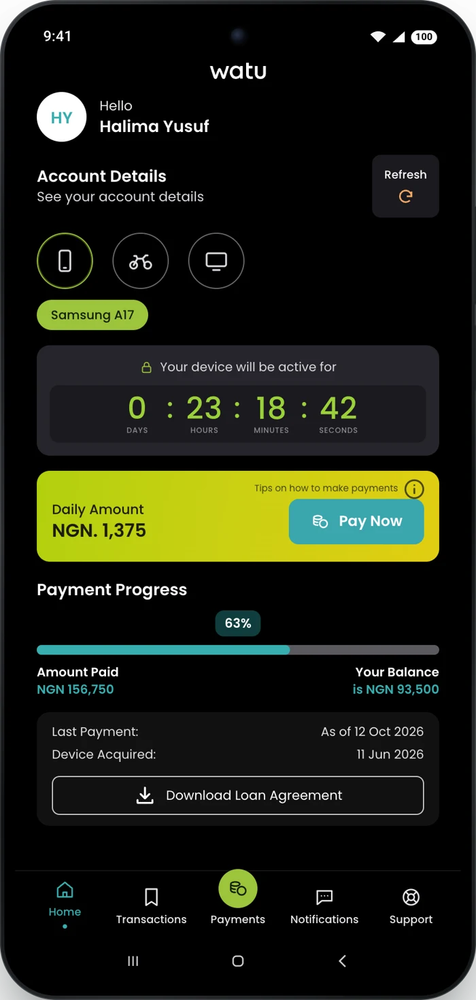
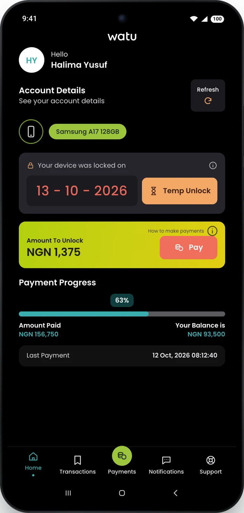
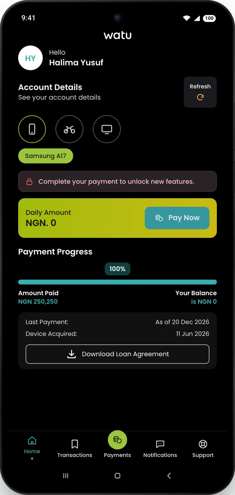
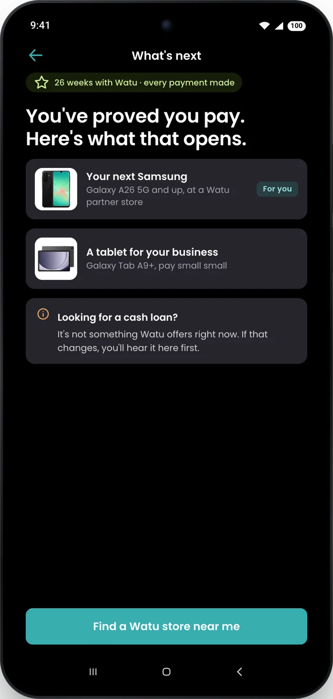
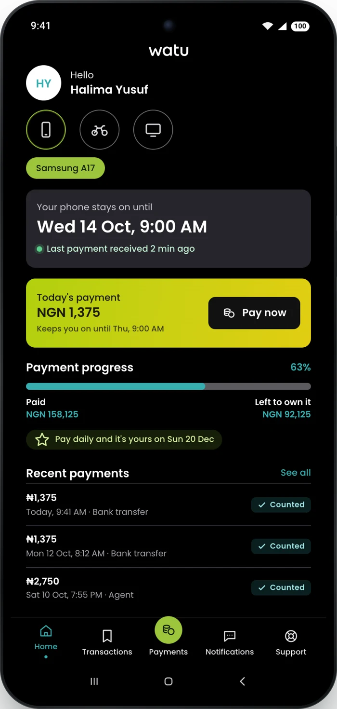
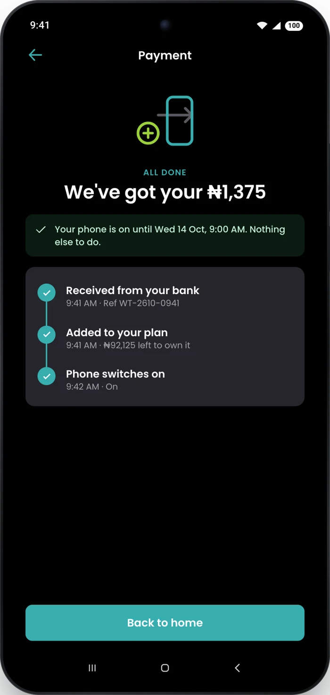
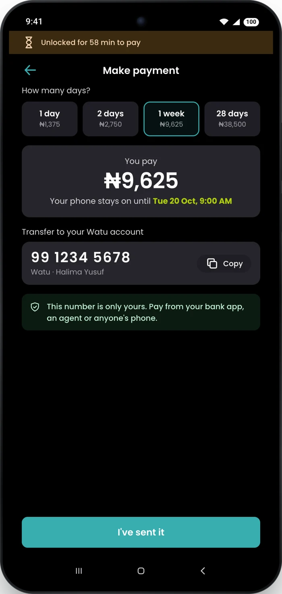
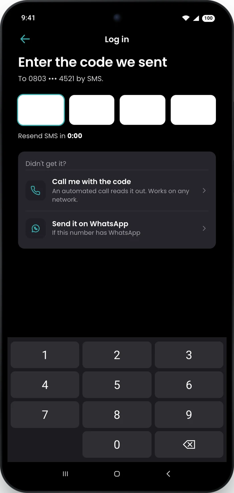

Pay. Unlock. Own it.
Then what?
Watu finances the phones, bikes and tuk tuks people earn with. The whole model runs on one loop: pay, stay unlocked, own it.
Customers tell Watu where that loop breaks. Right after the last payment, when the app still treats them as owing. And on the days a paused phone waits for a payment to land. This deck is about both moments, and how design can make each one feel like progress.
Why I want to work with Watu
You finance the tools people earn with
Delivery riders, hairdressers, mechanics. The Lagos customers on Watu's Nigeria page are the people I design for every day at ConnectNigeria.
The pause only works if people trust it
A phone that locks when a payment is late is a promise on both sides. Making that promise feel fair is design work, and it's the work I love.
You ship every few weeks
The Kenya app updated today, 13 October, with interactive home cards and notifications that open the right screen. I want to be shipping with you.
Watu,
and me
Connectivity. Mobility.
Opportunity.
Watu turns a small down payment into a phone, a bike or a tuk tuk that earns. Customers pay daily, the asset pauses if they don't, and one day it's theirs. Every daily payment is a small test of trust, on both sides.
Where my work already
rhymes with yours
Live · ConnectNigeria
Quote Request
Sole designer on a marketplace live since November 2025. Getting strangers to trust each other with money.
Case study ›Pitch · lending
FairMoney
Customers who repay and can't borrow again. The same moment as your finish line: a customer who kept their word, waiting to hear what's next.
Pitch deck ›Concept · fintech
Moniepoint
Getting locked-out customers back to their money. A paused phone is the same family of problem.
Case study ›Insurance · field agents
Tangerine Africa
ID capture and sign-up for field agents in low-connectivity areas. Watu sells through dealers and agents too.
The problem
“why did watu keep displaying complete your payment to unlock new features after completing it already”
Watu customer, Nigeria, Google Play, May 2026
They paid every naira. The app still treats them as owing. And the moment Watu could sell them their next phone is the moment the app goes quiet.
Paid off.
Then nothing.
I read 1,176 Play Store reviews from Kenya and Nigeria since January 2025 and tagged every low rating with a clear complaint by hand. The loudest theme isn't price. It's what happens after the phone.
109 reviews with a clear complaint, Jan 2025 to Oct 2026, by main theme
Field note · the live app
The design today,
rebuilt screen by screen.
Watu's own store screenshots show a Refresh button to check whether a payment landed, a countdown, and the unlock controls inside an app customers say won't open while the phone is locked. I don't own a Watu phone, so I rebuilt the live app from those screenshots and designed inside it.


Whose job is it?
Design can't decide who gets a second phone or when a device unlocks. It can decide what people understand at every step. Here's the line.
| Problem | Product, risk and engineering own | Design owns |
|---|---|---|
| "What's next?" | What finishers are offered: a next device, better terms, or nothing | An honest finish line, and only the offers that exist |
| Paid off, still "owing" | Releasing the lock and the app when the balance hits zero | Saying "released" on screen, with how to remove the app |
| Paid, still paused | Payment matching and unlock speed | One tracker: reference, expected time, "please don't pay again" |
| Can't pay while paused | What the lock platform allows: calls, a 1-hour unlock | The lock screen as a payment screen |
| Codes that never come | SMS delivery | A voice-call or WhatsApp code after the timer |
The fix
The finish line
It's yours.
Say it out loud.
Evidence. 39 reviews are about what comes after the phone. 8 people couldn't uninstall the app, reset the phone, or stop the payment prompts after paying in full.
Decision. The last payment ends on a celebration with the facts: total paid, how long it took, locks removed, a certificate, and permission to delete the app.
Depends on. Engineering releasing the device on the final payment, not days later.


What's next
Your best lead
just paid you off.
Evidence. 31 reviewers ask what comes next, usually a cash loan. Watu has replied that it doesn't offer cash loans, while one customer saw the option in the menu.
Decision. An honest "what's next": the record they built, the products Watu does finance, and a plain answer on cash loans instead of silence.
Depends on. Product deciding what finishers are offered. The screen only shows what exists.


Phone paused
The lock screen
is the payment screen.
Evidence. 28 reviews on paying and unlocking. "the m-pesa app is not there at all till i keep my sim card in another phone" (Kenya, April 2026).
Decision. What's owed and what it buys, Watu's own Temp Unlock up front, the customer's account number for any bank or agent, and why it paused if nothing is owed.
Depends on. What the device-lock platform lets this screen show and allow.

After paying
Got it.
Please don't pay again.
Evidence. "you can pay more than once" (88 found it helpful). Payments that take 24 hours to show. A Refresh button to check.
Decision. One tracker after every payment: received, added, switching on. The reference, an expected time, and a report button after 15 minutes.
Depends on. Real payment-to-unlock times by hour. An expected time is a promise.


Watch it work. Under two minutes.
Try it yourself
Tap through
the real thing.
Three journeys, before and after: a paused phone, the finish line, and three quick wins. The coral ring shows what to tap.
For riders on their own phones
One fold. The whole ride.

Small fixes.
Loud reviews.
No more Refresh. "very slowly on refreshing after payment is done" (85 found it helpful).
Name the date. Watu's day slider, with the day and time the phone stays on until.
A code that arrives. 21 reviews about getting in. A call or WhatsApp after the SMS timer.


What I chose
not to do.
The decisions that didn't make the screens matter as much as the ones that did. Each of these was on the table.
| I didn't | Because |
|---|---|
| Design a cash loan offer | Watu has said it doesn't offer them. A screen can't promise what product and risk haven't approved. |
| Weaken the lock | The pause protects the business and keeps prices low. I made it understandable, not easier to get around. |
| Build a new way to pay on the lock screen | Watu's Temp Unlock already exists, and a 5-star reviewer thanks Watu for it. Reusing it ships faster than a new payment flow. |
| Replace the day slider | Customers already know it. I added the date it buys, not a new control. |
| Lead with login codes | 21 reviews, but mostly SMS delivery, an engineering fix. Design adds a fallback, not a redesign. |
If I joined,
I'd ship these first.
Smallest and most certain first, so customers feel a change in week two while the bigger pieces wait on engineering.
| Fix | Size | Needs from others |
|---|---|---|
| Name the date on the day slider | Small | Nothing. Copy and layout only. |
| What's next, with a plain answer on cash loans | Small | Product confirming what finishers can be offered |
| "Please don't pay again" tracker | Medium | Payment status events from engineering |
| Finish line, certificate and "remove the app" | Medium | Releasing the device lock on the final payment |
| Lock screen as the payment screen | Large | What the lock platform allows |
Not tested yet.
Here's how I'd know in a week.
Five Watu Nigeria customers, ten minutes each, on the prototype. One question per moment, and a clear line for what counts as understood. Results replace this slide.
| Moment | We ask | Counts as understood if they say |
|---|---|---|
| Phone paused | "How would you get your phone back on?" | Pay from this screen, or transfer to their own account number. No app needed. |
| After paying | "Has your payment landed? Should you pay again?" | It landed. Don't pay again. The phone switches on by itself. |
| Paying ahead | "If you pay for a week, until when is your phone on?" | They read the exact date. |
| Final payment | "What has changed for you now?" | The phone is theirs, the locks are gone, they can remove the app. |
Why me
Hire the designer who already did the homework.
You'll find designers with more years. You won't find many who walk in with the research done, the screens in your language, a working prototype and the code.
The cheapest next sale is the customer
who just finished paying.
Grow
More second assets
- Finishers buying again within 90 days
- Days paid ahead
- Taps on "What's next"
Calm
Fewer "I paid, now what?"
- Duplicate payments within an hour
- Support contacts about paused phones
- 1-star reviews after the last payment
Protect
Guardrails stay flat
- On-time payment rateFlat
- Misuse of the 1-hour unlockFlat
- Collections workloadFlat
Test: start with the finish line in Nigeria, the market with the most finish-line reviews. Four weeks, half of finishers. No forecast numbers here: the first job is to measure.
AI-assisted designer-developer
Your design system, live in code, in one sprint.
Days 1–2 · Foundations. Audit both apps. Tokens in Figma variables and code.
Days 3–6 · Components. Amount cards, day pickers, trackers, chips, the lock screen. Figma variants, built in code.
Days 7–8 · Usage. When to use what, content rules for money and locks, accessibility.
Days 9–10 · Ship. A docs site, and the first screens rebuilt on it for Kenya and Nigeria.
Figma plus Claude Code. I review every line.
See Watu's system, live in code ›Tokens taken from the live app
Day one, I listen.
Day five, we have a plan.
What I'm
asking for.
A product designer on Watu's team, starting with Nigeria. I'd bring the research habit, the screens and the code, and I'd start with the two moments in this deck.
They paid it off.
Let's tell them it's theirs.
I'd love 20 minutes to walk you through this. Or give me a problem, and I'll come back with research, screens and code.
Email PromisePortfolioSelf-initiated, not affiliated with Watu. Watu's name, logo and photography belong to Watu and are used to identify the company. Screens rebuilt from Watu's store screenshots; customers, accounts and amounts made up.